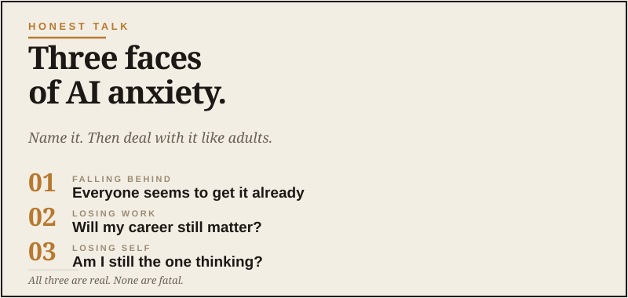

Honest Talk
The quiet worry. Named.

I want to say something out loud that I think a lot of capable men quietly feel but don’t mention to anyone, including their spouses. Not because it’s shameful. Because it’s hard to say without sounding like you’re less capable than you know you are.
There’s a low-grade anxiety about AI that’s sitting in the chest of a lot of grown men right now. It’s not about whether the technology is interesting or whether the demos are impressive. Those parts are easy to engage with. The anxiety is something different, and it has three faces.
The first face: am I falling behind?
You read an article about AI. Or you watch a video. Or you hear somebody talking about it at work. And there’s a moment where you think: everyone seems to know this except me.
You don’t. They don’t either, mostly. But the feeling is real. The pace at which the field is moving makes it impossible for any normal person with a job and a family to keep up with everything, and the marketing makes it feel like you’re supposed to be keeping up. That marketing is doing exactly what it was built to do: make you feel one step behind so you’ll buy something.
So you carry this small, persistent feeling of being one step behind. Not panicked — capable men don’t panic about much by midlife — but uneasy in a way that’s hard to name.
The marketing makes it feel like you're supposed to be keeping up. You're not. Nobody is.
The second face: is this making me obsolete?
The harder one. You’ve built skills over decades. You’ve become competent at things. You’ve earned a position, a reputation, a career. And now there are credible voices saying that AI is going to do a lot of what you do, faster and cheaper.
For some men, that’s an abstract concern. For others, it’s already showing up in their industry. Either way, there’s a quiet question underneath it: does what I’ve built still matter?
This is the harder face of the anxiety because it’s not really about technology. It’s about identity, value, and what comes next. And those are big questions that don’t resolve in a YouTube video.
The third face: what am I missing?
This one is subtler. It’s the feeling that there’s something important happening in the world right now that you don’t fully understand, and you suspect that not understanding it will eventually cost you something — opportunities, leverage, the ability to help your kids navigate their own careers, just basic adult competence in a changing world.
This is the FOMO face of AI anxiety, but it’s grown-up FOMO. Not “I’m missing the party.” More: I’m missing a meaningful shift, and the cost of missing it isn’t fully clear yet.
What I want to say about all of this
First: it’s real. You’re not making it up. A lot of grown men feel some version of this and most of them don’t talk about it because there’s no comfortable way to say I’m a successful adult and I’m mildly anxious about a chatbot. It sounds ridiculous. It’s also honest.
Second: it’s also manageable. Once you name the thing, it gets smaller. The anxiety thrives on vagueness. The minute you sit down with it directly, it loses most of its grip.
Third: the actual response is mostly to engage rather than avoid. The men who deal with this best are the ones who decide to learn enough about AI to have an informed opinion, and then live their lives. Not the ones who try to ignore it. Not the ones who chase it obsessively. The ones who treat it like any other significant thing happening in the world: take it seriously, learn what you need to learn, and then go back to your actual life.
What “engage rather than avoid” actually looks like
It’s not subscribing to twelve newsletters. It’s not watching forty hours of YouTube. It’s not buying every new tool.
It’s smaller and quieter than that.
It’s spending an hour with one tool until you understand what it actually does. It’s using AI for something real this week — a trip plan, a hard email, a decision you’re working through. It’s building enough first-hand experience that you have your own opinions instead of borrowed ones.
That’s usually all it takes for the anxiety to dissolve. Not because AI stops being a big deal. Because you stop feeling like an outsider to it. You become a guy who has used it, has thoughts about it, knows what it’s good for, and knows what it’s not. That’s a different relationship to the thing than wariness.
The thing about being capable
One last note. Capable men have a lifetime of evidence that they can figure out new things. You’ve learned new jobs, new tools, new skills, new responsibilities. You’ve adapted to changes that, in their moment, felt big and unfamiliar.
AI is one more thing on that list. Not the biggest thing. Not the most important thing. Just the current thing.
You will figure it out the same way you figured out everything else. By engaging with it directly, learning it on your own time, and bringing your judgment to it.
The anxiety is a signal that you take it seriously. That’s not a problem. That’s a strength. Use it as the nudge to start, then put it down and get to work.
You’re not behind. You’re early.